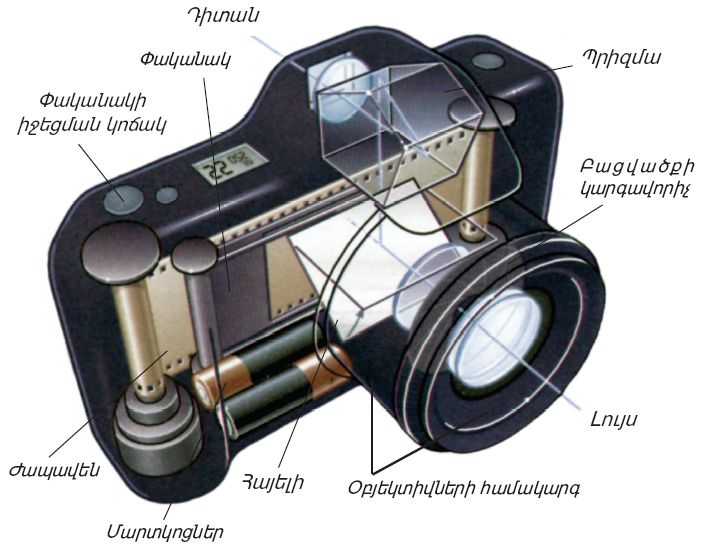
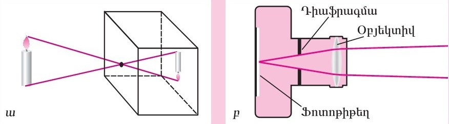
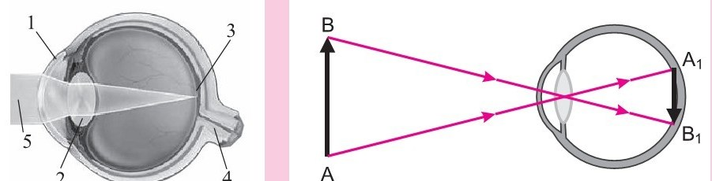

35. լուսանկարչական ապարատ.աչք և տեսողություն
Լուսանկարչական ապարատներ
Ֆոտոապարատը բաղկացած է 2 հիմնական մասից՝
1. օբյեկտիվ
2. ոչ լուսաթափանցիկ խցիկ

Օբյեկտիվի միջոցով մենք ստանում ենք պատկերներ։ Այսինքն՝ պատկերը կառուցվում է օբյեկտիվով և հաղորդվում ժապավենին։ Օբյեկտիվի վրա գտնվում են ֆոկուսային հեռավորության ղեկավարման վահանակը, որի միջոցով ղեկավարվում է ապարատից մինչև նկարահանվող կետ ընկած տարածությունը։
Դիաֆրագմայի միջոցով ղեկավարվում է այն լույսի քանակը, որը պետք է հայտնվի ժապավենի վրա։ Ինչքան լույսը քիչ է, այնքան պետք է դնել ցածր դիաֆրագմաներ՝ 2/ 2,8/ 4 և հակառակը։
Բարձր լուսավորության դեպքում պետք է դրվեն բարձր դիաֆրագմաներ՝ 8/ 11/ 16։
Ապարատի երկրորդ հիմնական մասը ոչ լուսաթափանցիկ խցիկն է, որն ավելի շատ ֆիզիկական դեր է կատարում և ունի բազմաթիվ ֆունկցիաներ։

Աչքի օպտիկական համակարգ
Եղջերաթաղանթը, ոսպնյակը, առաջին և երկրորդ խցիկների հեղուկները, ապակենման մարմինը կազմում են աչքի օպտիկական համակարգի հիմնական բաղադրամասերը։ Աչքի օպտիկական համակարգը ցանցաթաղանթի վրա առաջացնում է արտաքին աշխարհի շրջված և փոքրացած պատկերը։ Դեպի աչք գնացող լուսային ճառագայթները, մինչև ցանցաթաղանթ հասնելը անցնում են մի քանի վերը նշված լուսաբեկող կառուցվածքներով։ Լույսի ամենաարտահայտված լուսաբեկումը կատարվում է եղջերաթաղանթում։
Աչքի լուսաբեկիչ ուժը չափվում է դիոպտրիաներով (D)։ Մեկ դիոպտրիան ոսպնյակի բեկող ուժն է, որի ֆոկուսային հեռավորությանը մեկ մետր է։ Եթե բեկող ուժը մեծանում է, ֆոկուսային հեռավորությունը փոքրանում է։ Այստեղից հետևում է, որ եթե ոսպնյակը, որի ֆոկուսային հեռավորությունը հավասար է 50 սմ-ի, ունի 2(D ) դիոպտրիային հավասար բեկող ուժ։ Աչքի օպտիկական համակարգը ունի մի քանի բեկող միջավայր, որից յուրաքանչյուրը ունի իր բեկող ուժը և կառուցվածքային առանձնահատկությունը։ Այս ամենը խիստ բարդացնում են աչքի օպտիկական համակարգի ուսումնասիրումը։

Կարճատեսություն և հեռատեսություն
Կարճատեսության դեպքում զուգահեռ ճառագայթներն աչքում բեկվելուց հետո կիզակետվում են ոչ թե ցանցաթաղանթի վրա (ինչպես լինում է բնականոն տեսողության դեպքում), այլ դրա առջևում, որի հետևանքով դիտվող առարկայի հստակ պատկերը ցանցաթաղանթի վրա չի ստացվում։
Կարճատես աչքի ցանցաթաղանթի վրա կիզակետվում են միայն տարամիտման որոշակի աստիճան ունեցող, այսինքն՝ աչքին մոտիկ գտնվող առարկաներից եկող ճառագայթները։ Կարճատեսությանը նպաստում են նաև ժառանգական գործոնները և աչքի ակոմոդացիայի թուլացումը։ Ուժեղ կարճատեսության դեպքում փոփոխություններ են առաջանում նաև աչքի ներքին թաղանթներում։ Հեռատեսությունը աչքի բնականոն բեկունակության շեղում, երբ լույսի զուգահեռ ճառագայթներն աչքում բեկվելուց հետո կիզակետվում են աչքի ցանցաթաղանթի ետևում (F)։
Պատկերներն ստացվում են աղոտ։ Հեռատես աչքը, որը վատ է հարմարված ցանցաթաղանթի վրա զուգահեռ ճառագայթների միացման համար, առավել վատ է հավաքում մոտակա առարկաներից եկող ճառագայթները, հետևաբար վատ է տեսնում թե՝ հեռուն, թե՝ մոտիկը, և իրականում «հեռատեսություն» տերմինն այնքան էլ ճիշտ չէ։